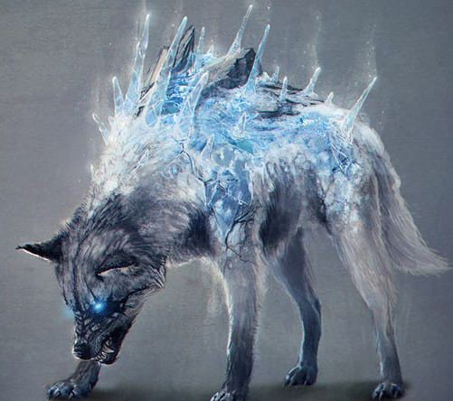
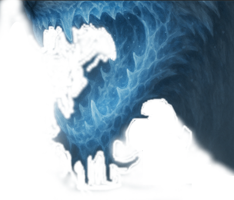
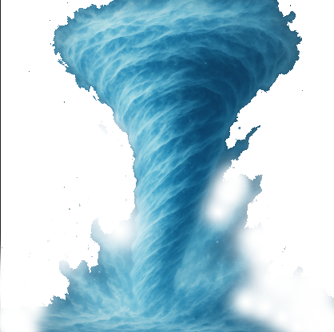

Anticola

Identidade
- Interpretado: Mestre
- Idade: 6 anos caninos
- Altura: 1,90
- Antecedência: Prisionero
- Associação: Nínguem
- Hobbs: N/A
- Personalidade: ranzinza, Rancoroso, Cabeça quente
Historia
Crescido num alcateia de lobos, conhecidos como lobos gélidos, skjarnwolves, vivia sua vida tranquilamente até sua alcateia foi atacada por caçadores, os parentes de anticola lutaram e conseguiram sair por cima daquela situação, ate que um mago poderoso chegou e usou seus feitiços de fogo para enfraquecer e mata muitos lobos, a mãe de anticola fugiu com ele, machucada escondeu seu filhote para despistar os caçadores,anticola saiu do esconderijo e e vagou sozinho por um tempo, ate ser achado por um explorador que passava pela área, ele o levou para um tipo de palácio o alimentando e cuidando de seus machucados, ele viveu feliz, por um curto tempo, o homem começou a treiná-lo, fazer ele lutar contra monstros, fazendo experimentos para deixá-lo mais forte e maior, depois de alguns anos, anticola matou seu dono num ataque de raiva, fugindo para floresta, encontrado por seres vestindo capuzes e com panos estranhos no rosto, anticola se via paralisado, imóvel, a única coisa visível era um cristal azul a sua frente, o ódio, a frustração, a tristeza, foram as únicas coisas q lhe restaram...ate em um dia, noite ele não sabe dizer, uma porta para liberdade se abriu, e ele não pensou duas vezes.Aparencia
Corpo e pelagem: A criatura tem o porte de um lobo robusto, com músculos definidos sob uma pelagem branco-acinzentada.
Olhos: Brilham com um azul gélido e intenso, Eles transmitem ferocidade.
Cristais de gelo: Do dorso da criatura brotam cristais de gelo afiados, azulados e translúcidos, que parecem crescer como espinhos ou placas defensivas. Alguns flocos congelados flutuam ao redor de seu corpo, como se ele estivesse sempre no centro de uma nevasca pessoal.
Boca e garras: Sua mandíbula parece rachada pelo frio, com dentes afiados como estalactites. As garras têm um brilho de gelo
Status e aptidões
-
Vida [75]
-
Defesa [17]
-
Força [+4]
-
Destreza [+5]
-
Constituição [+4]
-
Inteligencia [+1]
-
Sabedoria [+3]
-
Carisma [0]
Ataques
| Ataque | Descrição |
|---|---|
|

Mordida Gélida |
Anticula Congela sua Mandibula Para morder o inimigo para causar mais dano Mordida gélida Dano: 2d6+5 Apois o inimigo Receber o Dano Ele deve fazer um teste de Constituição DT 15 con , se não passar recebera 2d6 de dano gélido |
|

Sopro Gelido |
Ele sopra num raio de 10 metros, e todos que estiverem dentro desse raio, perderam metade do movimento, se passarem uma rodada, tomam 5d6 de dano gélido
se passarem da DT, receberam metade do dano de gelo
DT: 15 Uso diário 6 vezes |